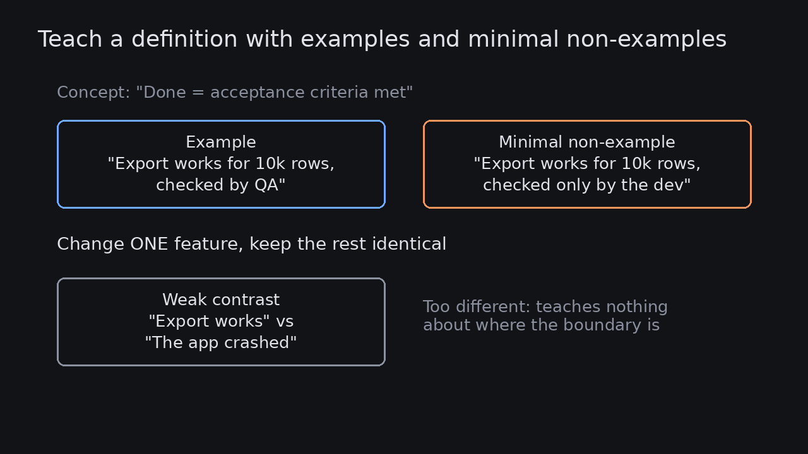

Teach a definition with examples and minimal non-examples
Source: Carl Hendrick (@C_Hendrick)
original post
What it claims
Carl Hendrick, writing about instructional design, says people learn a concept faster when they see both what it is and what it isn't. A key part of curriculum design is pairing examples with non-examples. The diagram in his thread illustrates the "difference principle": to teach "the line is horizontal", show a horizontal line next to one that is only slightly tilted, not next to a vertical one. A non-example that differs in just one feature shows exactly where the boundary sits. One that differs in everything teaches nothing.
Why it matters for a PO
Much of a PO's work is teaching a shared definition: the Definition of Done, an acceptance criterion, what counts as an "active user", what is in scope. Teams usually get positive examples only, so the edge gets argued at Sprint Review. Adding one or two near-miss non-examples to a story or the DoD makes the boundary visible before the work starts, and stops the "but technically it works" debate.
3 takeaways
- Pair every key definition with at least one non-example, so people see the boundary as well as the centre.
- Make the non-example a near miss: change one feature and keep everything else the same. A wildly different counter-case teaches nothing.
- Use them where arguments usually happen: acceptance criteria, the Definition of Done, metric definitions and scope notes.
Practice this week
Pick one story that is going into the next Sprint. Under its acceptance criteria, add a "Not done if…" line with one near-miss case (for example, "works in staging but the migration hasn't been run in prod"). In refinement, ask the team whether that line changed how they understood the story.